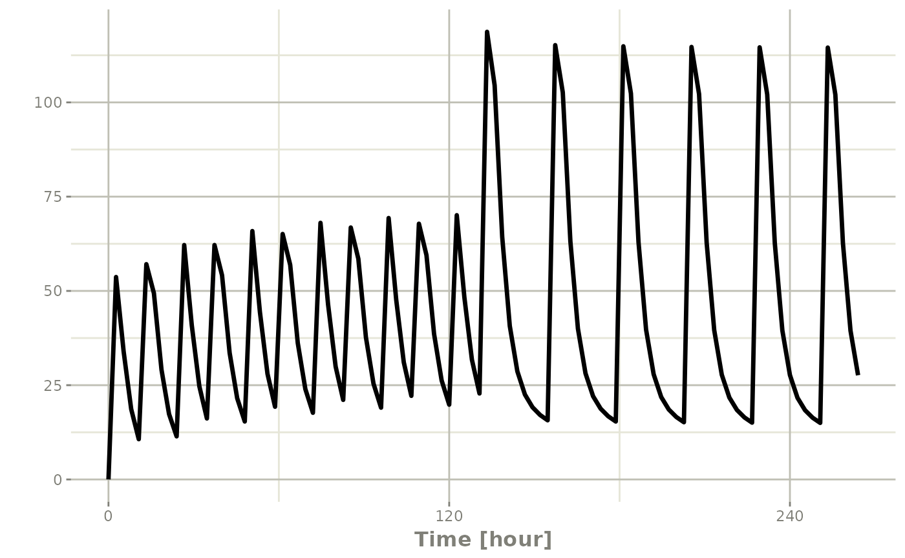
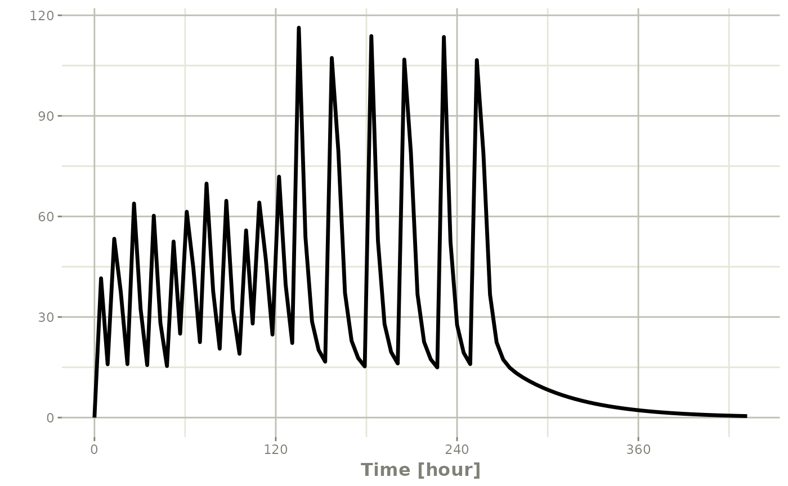
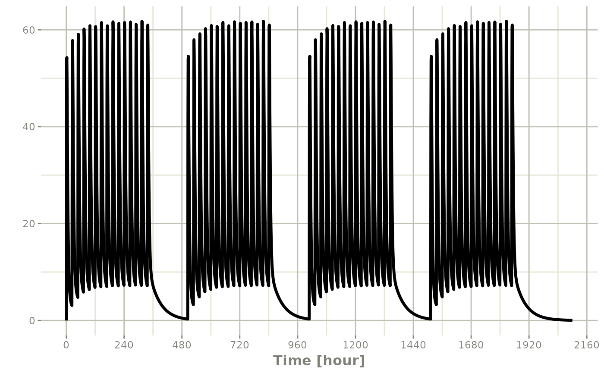
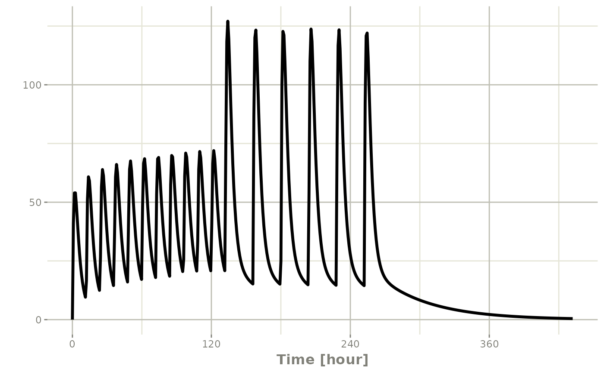
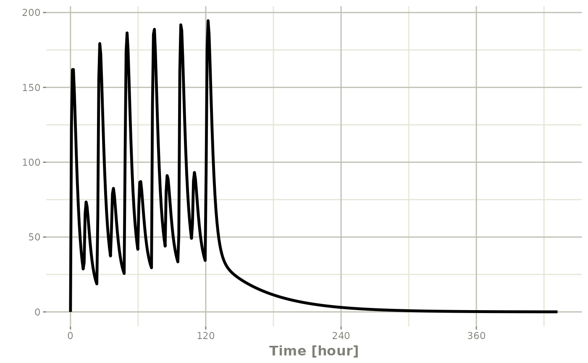
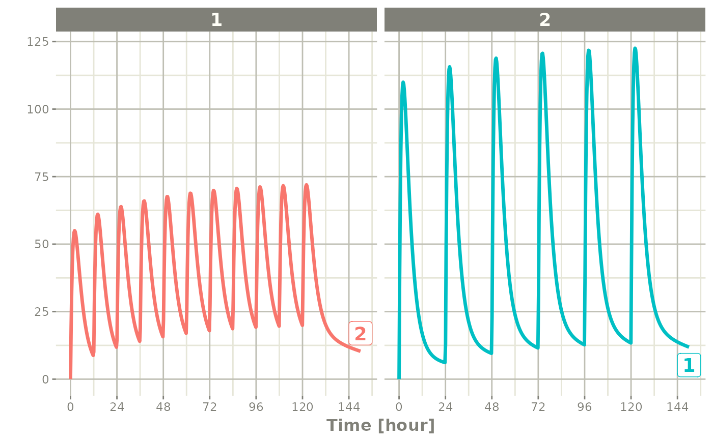

Combining event tables
Source:vignettes/articles/rxode2-event-table-combine.Rmd
rxode2-event-table-combine.RmdOnce single regimens are built with et() (see Building event tables with et()),
they can be combined into more complex designs with c(),
seq()/etSeq(),
rep()/etRep() and
rbind()/etRbind().
The examples use the model from the rxode2 tutorial:
library(rxode2)
#> rxode2 5.1.8.9000 using 2 threads (see ?getRxThreads)
#> no cache: create with `rxCreateCache()`
library(units)
#> udunits database from /usr/share/xml/udunits/udunits2.xml
## Model from rxode2 tutorial
m1 <-function() {
ini({
KA <- 2.94E-01
CL <- 1.86E+01
V2 <- 4.02E+01
Q <- 1.05E+01
V3 <- 2.97E+02
Kin <- 1
Kout <- 1
EC50 <- 200
## Added modeled bioavaiblity, duration and rate
fdepot <- 1
durDepot <- 8
rateDepot <- 1250
})
model({
C2 <- centr/V2
C3 <- peri/V3
d/dt(depot) <- -KA*depot
f(depot) <- fdepot
dur(depot) <- durDepot
rate(depot) <- rateDepot
d/dt(centr) <- KA*depot - CL*C2 - Q*C2 + Q*C3
d/dt(peri) <- Q*C2 - Q*C3
d/dt(eff) <- Kin - Kout*(1-C2/(EC50+C2))*eff;
eff(0) <- 1
})
}you to combine event tables by c, seq,
rep, and rbind.
Sequencing event tables
One way to combine event table is to sequence them by c,
seq or etSeq. This takes the two dosing groups
and adds at least one inter-dose interval between them:
## bid for 5 days
bid <- et(timeUnits="hr") |>
et(amt=10000,ii=12,until=set_units(5, "days"))
## qd for 5 days
qd <- et(timeUnits="hr") |>
et(amt=20000,ii=24,until=set_units(5, "days"))
## bid for 5 days followed by qd for 5 days
et <- seq(bid,qd) |> et(seq(0,11*24,length.out=100));
rxSolve(m1, et) |> plot(C2)
#> ℹ parameter labels from comments are typically ignored in non-interactive mode
#> ℹ Need to run with the source intact to parse comments
When sequencing events, you can also separate this sequence by a period of time; For example if you wanted to separate this by a week, you could easily do that with the following sequence of event tables:
## bid for 5 days followed by qd for 5 days
et <- seq(bid,set_units(1, "week"), qd) |>
et(seq(0,18*24,length.out=100));
rxSolve(m1, et) |> plot(C2)
Note that in this example the time between the bid and the qd event
tables is exactly one week, not 1 week plus 24 hours because of the
inter-dose interval. If you want that behavior, you can sequence it
using the wait="+ii".
## bid for 5 days followed by qd for 5 days
et <- seq(bid,set_units(1, "week"), qd,wait="+ii") |>
et(seq(0,18*24,length.out=100));
rxSolve(m1, et) |> plot(C2)
Also note, that rxode2 assumes that the dosing is what you want to
space the event tables by, and clears out any sampling records when you
combine the event tables. If that is not true, you can also use the
option samples="use"
Repeating event tables
You can have an event table that you can repeat with
etRep or rep. For example 4 rounds of 2 weeks
on QD therapy and 1 week off of therapy can be simply specified:
qd <-et(timeUnits = "hr") |>
et(amt=10000, ii=24, until=set_units(2, "weeks"), cmt="depot")
et <- rep(qd, times=4, wait=set_units(1,"weeks")) |>
add.sampling(set_units(seq(0, 12.5,by=0.005),weeks))
rxSolve(m1, et) |> plot(C2)
This is a simplified way to use a sequence of event tables.
Therefore, many of the same options still apply; That is
samples are cleared unless you use
samples="use", and the time between event tables is at
least the inter-dose interval. You can adjust the timing by the
wait option.
Combining event tables with rbind
You may combine event tables with rbind. This does not
consider the event times when combining the event tables, but keeps them
the same times. If you space the event tables by a waiting period, it
also does not consider the inter-dose interval.
Using the previous seq you can clearly see the
difference. Here was the sequence:
## bid for 5 days
bid <- et(timeUnits="hr") |>
et(amt=10000,ii=12,until=set_units(5, "days"))
## qd for 5 days
qd <- et(timeUnits="hr") |>
et(amt=20000,ii=24,until=set_units(5, "days"))
et <- seq(bid,qd) |>
et(seq(0,18*24,length.out=500));
rxSolve(m1, et) |> plot(C2)
But if you bind them together with rbind
## bid for 5 days
et <- rbind(bid,qd) |>
et(seq(0,18*24,length.out=500));
rxSolve(m1, et) |> plot(C2)
Still the waiting period applies (but does not consider the inter-dose interval)
et <- rbind(bid,wait=set_units(10,days),qd) |>
et(seq(0,18*24,length.out=500));
rxSolve(m1, et) |> plot(C2)
You can also bind the tables together and make each ID in the event
table unique; This can be good to combine cohorts with different
expected dosing and sampling times. This requires the
id="unique" option; Using the first example shows how this
is different in this case:
## bid for 5 days
et <- etRbind(bid,qd, id="unique") |>
et(seq(0,150,length.out=500));
library(ggplot2)
rxSolve(m1, et) |> plot(C2) + facet_wrap( ~ id)